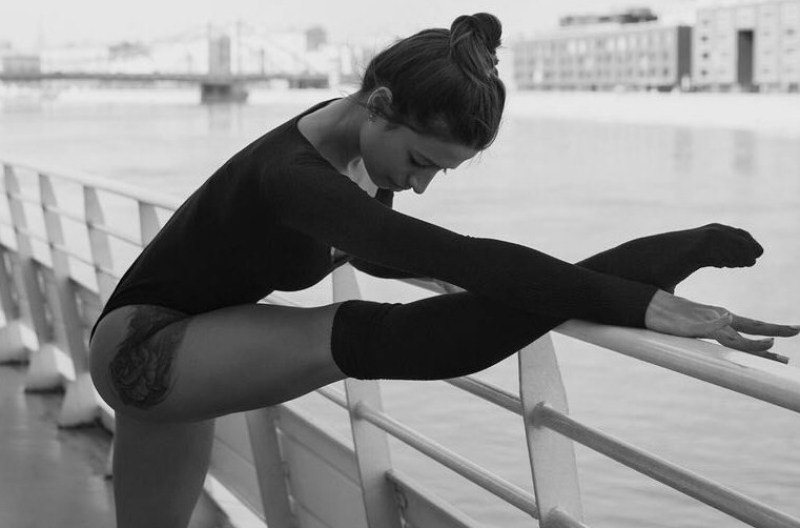

Стретчинг для начинающих – все о пользе растяжки
Стретчинг— это ряд физических упражнений, направленных на растяжение определенных мышц или сухожилий, или группы мышц, для улучшение чувствительности повышения тонуса. Как результат — увеличение мышечного контроля, гибкости и диапазона движений.

Как понять, что вам нужен именно стретчинг?
Начнем с того, что никаких возрастных ограничений стретчинг не имеет. А вот иметь гибкое тело с красивой осанкой мечтают все. Так вот это можно получить благодаря стретчингу, который также помогает бороться со стрессом, улучшает метаболизм.
Для современных людей, а именно жителей мегаполисов, которые нередко страдают гиподинамией, польза стретчинга неоспорима, ведь он помогает:
- подтянуть тело, смоделировать мышечный корсет
- улучшить осанку и координацию
- прорабатывать мышцы стабилизаторы, которые редко задействуются в повседневной жизни
- развить гибкость
- избавится от застойных явлений
- улучшить кровообращение и обмен веществ


Виды стретчинга:
Чаще всего различают базовый стрейчинг (простые упражнения на полу для новичков, которые позволят подготовить тело к другим видам стретчинга) и аэростретчинг (занятия на растяжку в воздухе с помощью подвешенных к потолку полотен, которые позволят увеличить нагрузку на мышцы (новичкам не подойдет).
Однако в зависимости от степени нагрузки на мышцы существует мягкий стретчинг (мышцы растягиваются до своей привычной длины, а упражнения выполняются по 40 секунд) и глубокий (растягивает мышцы до новой длины. Тут упражнения выполняются от 1 до 5 минут).

Кроме того, есть классификация стретчинга по способу выполнения упражнений:
- Статический
- -стретчинг для начинающих, упражнения расслабляют мышцы, выполняются медленно и плавно. Тренировка способствует укреплению сухожилий и мягкому разрабатыванию суставов, мышцы получают статическую нагрузку, сохраняясь в сокращенном состоянии;
- Динамический
- -относительно безопасен и подходит для тех, кто имеет слабую физическую подготовку. Упражнения чередуются таким образом, что сначала мышцы напрягаются, а затем расслабляются;
- Активный
- -направлен на растягивание мышц, которые находится в пассивном состоянии. Это достигается работой других групп мышц, которые ее окружают. Благодаря активному стретчингу также увеличивается подвижность суставов. Перекликается с занятиями йогой;
- Изометрический
- -здесь растяжка происходит в четыре этапа: мышцы напрягаются, расслабляются, растягиваются и фиксируются. Требует много усилий и хорошей физической подготовки. Но от него мышцы становятся очень мягкие и пластичные;
- Баллистический
- -довольно опасный вид стретчинга, который нельзя делать без наблюдения тренера. Упражнения делаются резко, отрывисто, динамично. Требуют очень хорошей физической подготовки;
- Проприоцептивный нервно-мышечный
- -восстанавливает подвижность суставов впоследствии нарушений работы мышц, травм или операции.

Если вы не верите, что вы способны сделать поперечный шпагат, вы никогда не сможете его сделать. И наоборот. Уверенность и спокойствие йога позволят достигнуть исключительной растяжки.
«Гибкость, Сила, Выносливость»Попенко В.А.